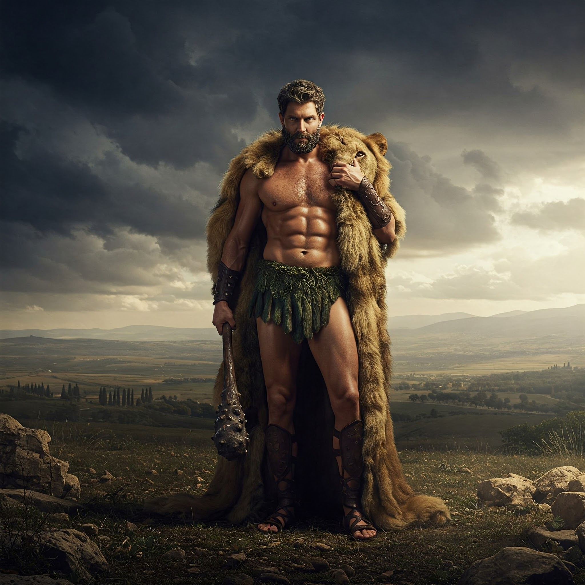

Los dioses contemplan tu victoria.
El destino ha puesto grandes desafíos en tu camino, pero con astucia, fuerza y determinación, has demostrado ser digno de la gloria. Como el héroe de antaño, has vencido monstruos, superado obstáculos y desafiado lo imposible.
Las estrellas cantan tu nombre, los dioses te observan con respeto y el Olimpo abre sus puertas para recibirte como un verdadero campeón.
Hoy, tu leyenda queda escrita en los anales de la historia. ¡Que tu valentía y destreza sean recordadas por generaciones!
¡Eres un héroe!
"La verdadera fuerza nace cuando el miedo es vencido"
- Palabras atribuidas a Heracles
Has ganado: La Corona del Héroe